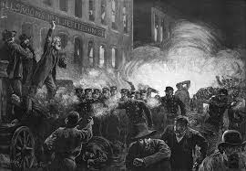
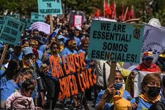

History of International Workers' Day
International Workers' Day, also called Labor Day in many countries, originated from the labor union movement, specifically the eight-hour day movement, which advocated eight hours for work, eight hours for recreation, and eight hours for rest.
The date was chosen to commemorate the Haymarket affair, which occurred in Chicago on May 4, 1886. It began as a peaceful rally in support of workers striking for an eight-hour day and ended in tragedy after a bomb was thrown at police.
Labor Issues Today
Although significant progress has been made, many challenges remain in the modern labor landscape. Gig workers, freelancers, and remote employees often lack the protection of traditional labor laws.
Issues such as workplace automation, income inequality, and gender-based pay gaps continue to drive global labor activism. a tragic incident that left a toll of dead and wounded, and led to the execution and imprisonment of several union leaders, known as the Chicago Martyrs